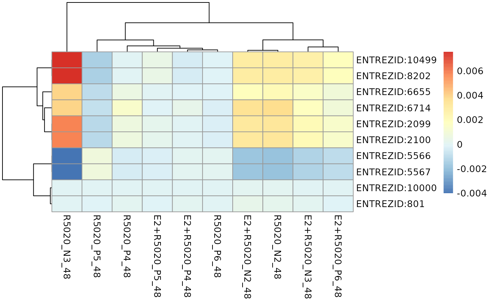

R/plot_gene_contribution.R
plot_gene_contribution.RdPlot genes' contribution to a specific pathway's perturbation as heatmap
plot_gene_contribution(
genePertScore,
gsToPlot,
mapEntrezID = NULL,
metadata = NULL,
annotation_attribute = "pathwayPertScore",
pathwayPertScore = NULL,
...
)List of gene-wise perturbation scores generated using function raw_gene_pert()
character Name of the pathway to be plotted
Optional. A data.frame matching genes' entrez IDs to other identifiers, such as gene names.
Must contain 2 columns: "entrezid" and "mapTo"
A data.frame containing sample metadata for heatmap annotation
character Vector specifying attributes to draw annotations for. Default to "pathwayPertScore" (
ie. pathway-level perturbation scores)
A data.frame containing pathway-level perturbation scores for each pathway each treated sample. Output of function pathway_pert()
Used to pass various potting parameters to pheatmap::pheatmap()
The single-sample pathway-level perturbation score for a given pathway is derived from aggregating all the gene-wise perturbation scores of genes in that pathway. This function visualises individual pathway genes' perturbation scores as a heatmap to demonstrate genes' contribution to a pathway perturbation.
Plotting of the heatmap is done through pheatmap::pheatmap() so all plotting parameters accepted by pheatmap::pheatmap() could also be passed to this function.
It is recommended to provide the pathway-level perturbation scores derived using the pathway_pert() function to visualise the directions of changes at pathway-level
as a column annotation, which helps the identification of genes driving or antagonizing the perturbation.
Additional annotation attributes could be specified through the annotation_attribute parameter and the specified attributes must be provided by columns of the sample
metadata data.frame provided through the metadata parameter, otherwise the attributes will be ignored.
Kolde R (2019). pheatmap: Pretty Heatmaps. R package version 1.0.12, https://CRAN.R-project.org/package=pheatmap.
#compute weighted single sample logFCs
data(metadata_example)
data(logCPM_example)
# compute single-sample logFCs for all treated samples
ls <- weight_ss_fc(logCPM_example, metadata = metadata_example,
factor = "patient", control = "Vehicle")
# extract all the KEGG pathways
gsTopology <- retrieve_topology(database = "kegg")
# compute raw gene-wise perturbation scores
genePertScore <- raw_gene_pert(ls$logFC, gsTopology)
# sum gene-wise perturbation scores to derive the pathway-level single-sample perturbation scores
pathwayPertScore <- pathway_pert(genePertScore)
# Genes' contribution to the perturbation of Estrogen signaling pathway was
# visuaulised with pathway-level perturbation scores
# and treatments as column annotation attributes.
plot_gene_contribution(genePertScore = genePertScore, gsToPlot =
"Estrogen signaling pathway", metadata = metadata_example,
annotation_attribute = c("pathwayPertScore", "treatment"),
pathwayPertScore = pathwayPertScore)
